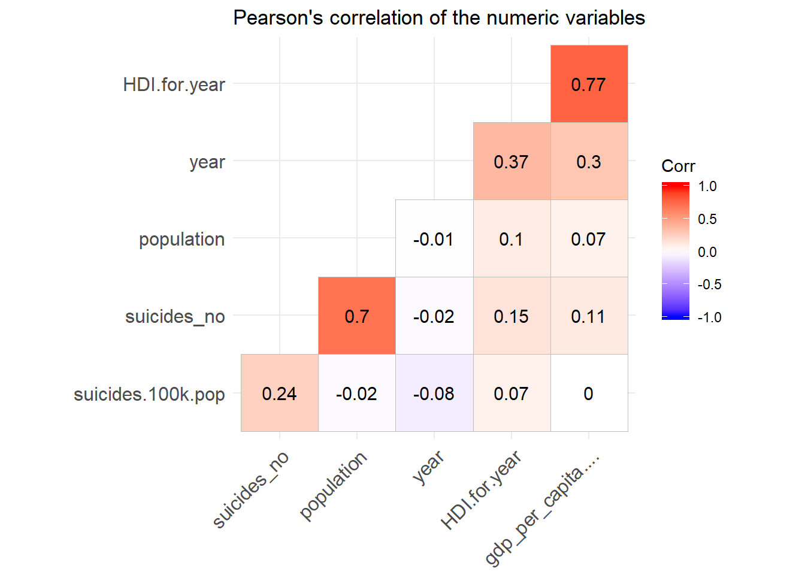

2 Data exploration
In this section we are going to explore the data in order to find insights.
Do we have any missing data ?
sapply(suicide, is.na) %>% colSums %>% kable () %>%
kable_styling(bootstrap_options = "striped", full_width = F)| x | |
|---|---|
| country | 0 |
| year | 0 |
| sex | 0 |
| age | 0 |
| suicides_no | 0 |
| population | 0 |
| suicides.100k.pop | 0 |
| country.year | 0 |
| HDI.for.year | 19456 |
| gdp_for_year…. | 0 |
| gdp_per_capita…. | 0 |
| generation | 0 |
Only the HDI.for.year column contains missing values. What is the proportion of missing data in this column?
## [1] 69.9353Near 70 % of the data is missing for this column. We’ll see how we can make use of this variable.
2.1 Qualitative variables frequencies
2.1.1 Génération
suicide %>% group_by(generation) %>%
summarize(nb = n()) %>% kable () %>%
kable_styling(bootstrap_options = "striped", full_width = F)| generation | nb |
|---|---|
| Boomers | 4990 |
| G.I. Generation | 2744 |
| Generation X | 6408 |
| Generation Z | 1470 |
| Millenials | 5844 |
| Silent | 6364 |
These are the number of occurences of each generation in the dataset.
X generation and silent are the most popular. Generation Z is the smallest group.
2.1.2 Age groups
Let’s now visualize the age groups
The age groups are all equally distributed.
2.1.3 By sex
How about the the sex group. They both are equally distributed
2.2 Data by year
Now do we have the same amount of data for each year ?
The dataset does not have all the data for each year. Each year varies. For example the last year 2016 has the fewest records. We need to keep this information in mind when we want to interpret the results of the analysis. # Visualization
In this section we are going to visualize the data.
2.3 Suicide rates by sex and age group

This graphs displays a lot of information.
For all the times, all the age groups the suicide rate is higher for men than women.
This means that the variable sex differentiates the population of this dataset. We can check this with an analysis of variance.
2.4 Analysis of variance (ANOVA)
temp <- suicide %>% group_by(year,sex, age) %>%
summarize(moy_suicide = mean(suicides.100k.pop))
fit <- aov(formula = moy_suicide~age+sex, data = temp)
summary(fit)## Df Sum Sq Mean Sq F value Pr(>F)
## age 5 19222 3844 171.4 <2e-16 ***
## sex 1 20754 20754 925.1 <2e-16 ***
## Residuals 375 8413 22
## ---
## Signif. codes: 0 '***' 0.001 '**' 0.01 '*' 0.05 '.' 0.1 ' ' 1There’s a statistically significant difference between the two groups (men and women). This difference is stronger than the age group. (Look at the F value, by default R doesn’t print numbers < to 2e-16)
2.5 Correlation between pairs of quantitative variables
options(repr.plot.height = 4, repr.plot.res = 180, repr.plot.width = 6)
suicide[,sapply(suicide, is.numeric)] %>%
cor(use = "complete.obs") %>% ggcorrplot(hc.order = TRUE, type = "lower",
lab = TRUE)
This graph of correlations tells us a lot of things. Let’s start with the variables of economic nature such as the HDI (Human Development Index), GDP (Gross Domestic Product).
We observe from the graph that the human development index correlates positively with the per capita GDP (0.77), which means that these two variables tend to go in the same direction. GDP correlates positively with the population. . But beware it is only a correlation and this coefficient does not translate a causality. For example, the number of suicide is positively correlated with the country, if we want to summarize it in a fatalistic way then it seems that the more the rich country the more the people commit suicide, which is false. The reason for this correlation is that it is a time series: the number of suicide increases with the growth of the population which itself increases with time, the same goes for the GDP, which increases every year.
When we express the number of suicides for a population of 10,000, we can clearly see that GDP has a very weak influence.
2.6 Let’s use the variable GDP for year (gross domestic product of the year)
A priori this variable is not in a numeric format. Considering the case of Albania in 1987, we have a GDP for men of 15-24 of 2,156,624,900. it does not mean anything because the GDP does not depend on a category of the population. This number is repeated for all age categories.
Thanks to Google we can see clearly. In 1987, Albania’s GDP was about 2.156 billion dollars. It is therefore concluded that this value is redundant to preserve the integrity of the tabular format of the database because a country has only one GDP while one country can be divided into several categories.
We will therefore correct this variable in order to use it in the following analysis
In order for us to be able to use this variable, we will divide the GDP by age group, so we can easily sum them up when we group the data.
suicide$gdp <- gsub(",","",suicide$gdp_for_year....) %>% as.numeric()
gdp <- suicide %>% group_by(country, year) %>%
summarize(occurence = n(), gdp = sum(gdp)) %>% mutate(real_gdp = gdp/occurence)france <- gdp %>% filter(country == "France")
germany <- gdp %>% filter(country == "Germany")
canada <- gdp %>% filter(country == "Canada")We can now use this variable for the rest of our study since we know it represents the GDP. We could verify it by multiplying the GDP per capita by the population.
Let’s continue to visualize the data by creating treemaps so we can see the importance of each country according to the numerical variables of the dataset.
gdp_2014 <- suicide %>% group_by(country, year) %>%
summarize(occurence = n(), gdp = sum(gdp)) %>% mutate(real_gdp = gdp/occurence) %>%
filter(year == 2014)## Warning: 'hc_add_series_treemap' is deprecated.
## Use 'hctreemap' instead.
## See help("Deprecated")The US economy is really big. But China and India which also are big economies are missing in the dataset leaving Japan to be the second world highest GDP.
Let’s plot this same treemap but with GDP per capita to see how things change.
## Warning: 'hc_add_series_treemap' is deprecated.
## Use 'hctreemap' instead.
## See help("Deprecated")Things have changed since Luxembourg and Norway are the countries with the highest GDP per capita.
Let’s now see which are the countries with highest suicide rates that year.
suicide_2014 <- suicide %>% group_by(country, year) %>%
summarize( count = n(), population = sum(population), suicide_total = sum(suicides.100k.pop)) %>%
filter(year == 2014)## Warning: 'hc_add_series_treemap' is deprecated.
## Use 'hctreemap' instead.
## See help("Deprecated")Lithuania, South Korea and Suriname have the highest suicide rates in 2014.